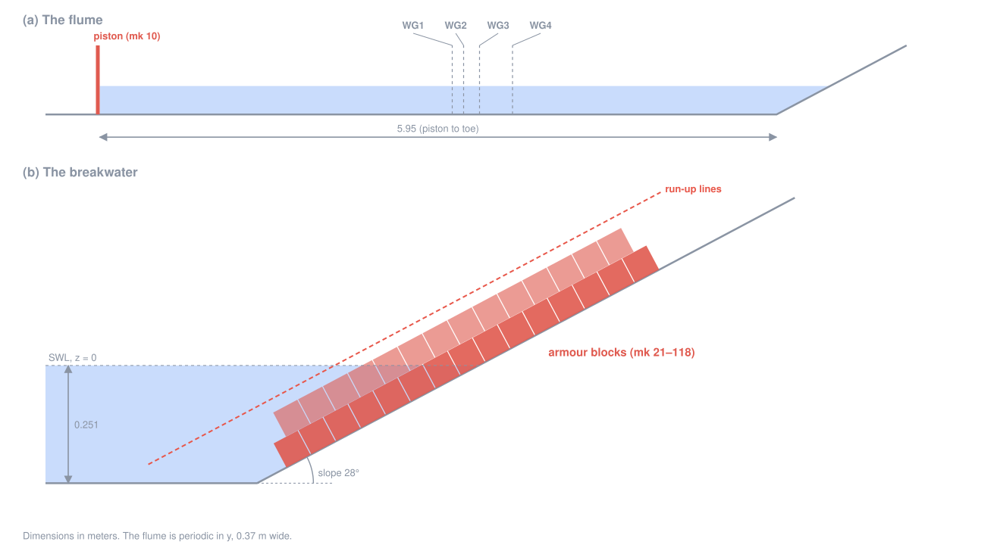
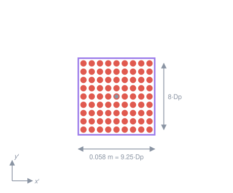
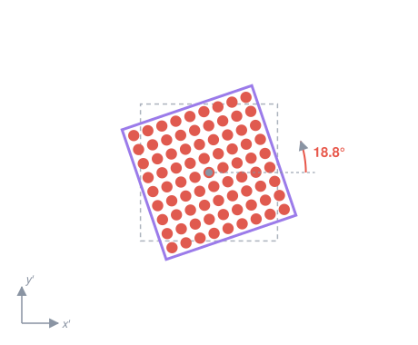
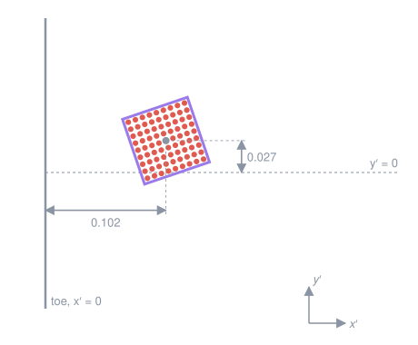
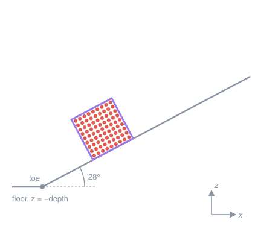
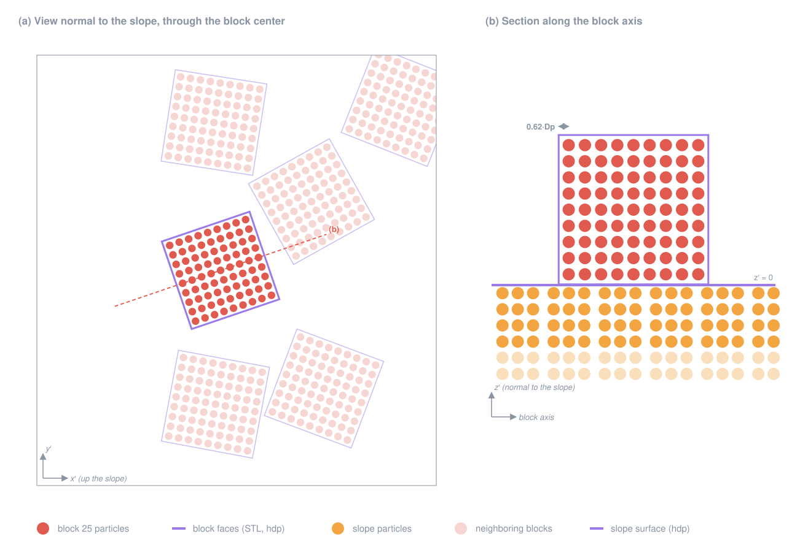
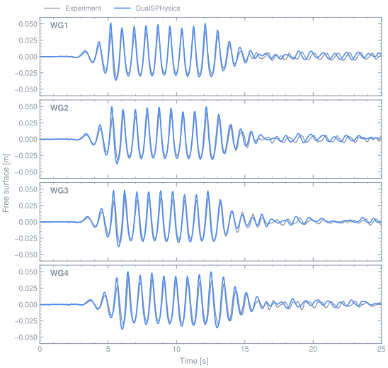
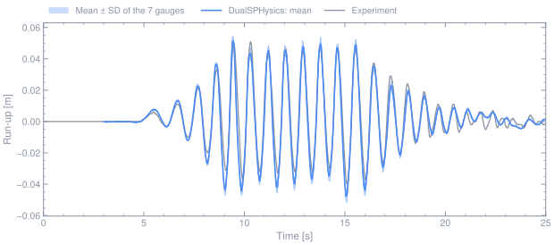

Wave run-up¶
Under review by Bonaventura Tagliafierro
This benchmark is a 3-D wave flume with a breakwater. A piston wavemaker generates waves, which travel along the flume and run up a 28° slope armoured with two layers of cubic blocks. The free-surface elevation at four gauges and the run-up on the slope are compared with the experimental data of Zhang et al. (2018).
The case is supplied in examples/benchmarks/04_WaveRunup. This page explains its configuration in detail, and in particular how each armour block is drawn with particles that follow its exact shape and position.
What's Covered in This Tutorial
- A flume periodic in the transverse direction
- A piston driven by a motion file (
mvpredef) - A slope drawn with its own particle lattice with FreeDraw
- 98 armour blocks drawb individually
- Wave gauges and inclined run-up gauges
Video: To be updated.
Case configuration¶
Physical setup¶

| Element | Dimensions [m] | Position |
|---|---|---|
| Water depth | 0.250 | still-water level at \(z=0\) |
| Flume | 0.37 wide, periodic in \(y\) | centered on \(y=0\) |
| Piston | mk 10 | 5.95 m before the toe of the slope |
| Slope | 28° | toe at \(x=0\), on the floor |
| Armour blocks | 98 cubes | two layers on the slope, mk 21–118 |
| Particle spacing | \(Dp = 0.00627\) |
The water is labeled mkfluid=0, the floor and the slope mkbound=0, the piston mkbound=10, and each armour block its own mkbound, from 21 to 118.
Physical constants¶
<constantsdef>
<gravity x="0" y="0" z="-9.81" comment="Gravitational acceleration" units_comment="m/s^2" />
<rhop0 value="999" comment="Reference density of the fluid" units_comment="kg/m^3" />
<rhopgradient value="3" comment="Initial density gradient 1:Rhop0, 2:Water column, 3:Max. water height (default=2)" />
<hswl value="0" auto="true" comment="Maximum still water level to calculate speedofsound using coefsound" units_comment="metres (m)" />
<gamma value="7" comment="Polytropic constant for water used in the state equation" />
<speedsystem value="0" auto="true" comment="Maximum system speed (by default the dam-break propagation is used)" />
<coefsound value="20" comment="Coefficient to multiply speedsystem" />
<speedsound value="0" auto="true" comment="Speed of sound to use in the simulation (by default speedofsound=coefsound*speedsystem)" />
<coefh value="1.3" comment="Coefficient to calculate the smoothing length (h=coefh*sqrt(3*dp^2) in 3D)" />
<cflnumber value="0.2" comment="Coefficient to multiply dt" />
</constantsdef>
Fluid: water with reference density 999 kg/m³. rhopgradient=3 indicates that the water is initialized with a hydrostatic density profile computed from the maximum water height per each vertical line. This ensures that particles within the breakwater are initialized with the right pressure values.
Speed of sound: the entries with auto="true" are calculated by GenCase. The still-water level hswl is taken from the water depth, and the system speed is the dam-break velocity taken as \(\sqrt{g\,h_{\mathrm{swl}}}\); the speed of sound is then computed considering the multiplier coefsound = 20.
Smoothing length: in 3D, \(h = \mathrm{coefh}\,\sqrt{3}\,Dp = 1.3\sqrt{3}\times0.00627 = 0.0141\) m. Each particle interacts with neighbors up to \(2h\) = 4.50·Dp away. This information is used to define the number of boundary layers needed for correct simulations.
Time step: cflnumber=0.2 scales the time step that the solver computes at every step, to account for the Courant condition.
Geometry definition¶
Real dimensions and particle spacing¶
<newvarcte DepthReal="0.25" _rem="Water level (experiment)" />
<newvarcte wavePeriod="1.50" waveH="0.12" _rem="Only used for tank size and time out" />
<newvarcte regularWaves="20" />
<newvarcte timeMax="regularWaves*wavePeriod" />
<newvarcte timeOut="wavePeriod/30" />
<newvarcte ToeDist_X="5.95" _rem="Piston to toe of the slope" />
<newvarcte pistonPosition="-ToeDist_X" />
<newvarcte domainDown="pistonPosition-4*waveH" />
<newvarcte ToeX="0" _rem="Toe of the slope" />
<newvarcte SlopeAngle="28" _rem="in degrees" />
<newvarcte BoxLength="0.058" />
<newvarcte BoxWidth="0.058" />
<newvarcte BoxHeight="0.058" />
<newvarcte domainWidthY="0.37" _rem="Periodic in y" />
<!-- Resolution -->
<newvarcte nY="59" _rem="Particles across the periodic width (74: depth exact)" />
<newvarcte Dp="domainWidthY/nY" />
<newvarcte Dpm="Dp/2" />
<!-- Real geometry on grid faces (SWL at z=0, toe at x=0) -->
<newvarcte depth="roundpos(DepthReal,0,Dp)" />
<newvarcte TopZ="roundpos(3*waveH,0,Dp)" />
<newvarcte tankHeight="depth+TopZ" />
<newvarcte PistonX="roundpos(pistonPosition,0,Dp)" />
<newvarcte DownX="roundpos(domainDown,0,Dp)" />
Particle spacing: the flume is periodic in \(y\), so its width needs to be an integer number of spacings, thus we identify Dp from the width divided by nY = 59, that is 0.00627 m.
Rounding: the depth, the top of the walls, the piston, and the end of the flume are rounded with roundpos to the nearest position that is an integer number of spacings from the origin. The depth becomes 40·Dp = 0.251 m, and the piston face \(x\) = −5.951 m. As the comment on nY notes, 74 particles across the width would make the depth exact.
The particle lattice¶
<newvarcte PminX="DownX-Dpm-Dp" PminY="-domainWidthY/2+Dpm" PminZ="-depth-Dpm-10*Dp" />
<newvarcte PmaxX="domainBeach+10*Dp" PmaxY="domainWidthY/2-Dpm" PmaxZ="TopZ+10*Dp" />
<newvarcte PosMin_x="PminX" PosMin_y="PminY" PosMin_z="PminZ" />
The lattice origin: the nodes are at Dp/2 + k·Dp from the floor, the piston face, and the still-water level, so these surfaces fall halfway between two nodes. In \(y\), the 59 rows of nodes run from Dp/2 inside one side of the flume to Dp/2 inside the other, so that the particles are evenly spaced across the periodic boundary too.
Periodicity: the parameter YPeriodicIncZ makes the flume periodic in \(y\), meaning that a particle that leaves through one side enters through the other. The flume can therefore be regarded as a strip of an infinitely wide breakwater.
Piston, floor, and slope¶
<!-- Particle positions (first layer) -->
<newvarcte Floorpz="-depth-Dpm" />
<newvarcte Pistonpx2="PistonX-Dpm" Pistonpx1="Pistonpx2-5*Dp" />
<newvarcte Slopepx1="ToeX+Dpm*sindg(SlopeAngle)/(1+cosdg(SlopeAngle))" _rem="Slope particle line Dp/2 below the real slope" />
<newvarcte Slopepx2="Slopepx1+(TopZ-Floorpz)*cosdg(SlopeAngle)/sindg(SlopeAngle)" />
<!-- Slope particles -->
<newvarcte SlopeLen="tankHeight/sindg(SlopeAngle)" _rem="Length of the real slope" />
<newvarcte Slopexl1="Dpm" Slopexl2="roundpos(SlopeLen-Dpm,Slopexl1,Dp)" />
<newvarcte Slopezl1="-Dpm-5*Dp" Slopezl2="-Dpm" _rem="6 layers, first one Dp/2 below the surface" />
Piston: six columns of particles (Pistonpx1 to Pistonpx2), the first one Dp/2 behind the piston face. It starts one row above the first floor layer.
Floor: Floorpz is the first floor layer, Dp/2 below the floor; the floor is drawn on the lattice of the case, with six layers downwards.
Slope: the slope is drawn in its own frame, with FreeDraw: \(x'\) along the slope from the toe, \(z'\) normal to it. Its particles form a box from Slopexl1 to Slopexl2 along the slope, and six layers from Slopezl1 to Slopezl2 below it, the first one Dp/2 below the slope surface:
<setfrdrawmode auto="true" />
<matrixreset />
<move x="#ToeX" y="0" z="#-depth" />
<rotate ang="#SlopeAngle" x="0" y="1" z="0" />
<drawbox>
<boxfill>solid</boxfill>
<point x="#Slopexl1" y="#PminY" z="#Slopezl1" />
<endpoint x="#Slopexl2" y="#PmaxY" z="#Slopezl2" />
</drawbox>
<matrixreset />
The slope frame: the box is written in slope coordinates, and the two transformations place it in its final position. rotate tilts it by the slope angle about \(y\), and move brings the origin to the toe, on the tank bottom. FreeDraw then places the particles on a lattice that starts exactly at point, aligned with the slope. The armour blocks use the same slope frame.
Armour blocks¶
The breakwater is armoured with 98 cubic blocks, laid in two layers on the slope, with the positions of the experiment. To comply with the experimental armour configuration, each block requires two representations, with the same coordinates, which is achieved here by:
- Wall surface: the file
Blocks_Final.stlcontains the 98 blocks in their final position, and is loaded inGeometryForNormalsto compute the mDBC normals. This was generated after the experimental campaign, and in this setup, it represents our firm configuration. - Particles: each block is drawn as a box of particles, placed with its own position and rotation, so that the particles fill the block exactly where the STL puts it.
This section follows one block, block 25 (mkbound=25), from the XML to its final position.
The block surfaces¶
<!-- blocks -->
<setmkbound mk="50" />
<drawfilestl file="Blocks_Final.stl" advanced="true">
<drawrotate angx="0" angy="0" angz="#0" />
<drawmove x="#0" y="0" z="#-depth" />
<depth depthmin="#0" />
</drawfilestl>
STL in the slope coordinates: the STL is written with the toe of the slope at the origin and the floor at \(z=0\); drawmove conforms its geometry to our spatial frame which uses the free surface at 0. The faces of the STL are the real faces of the blocks, and they will be used as the wall surfaces of the blocks for mDBC.
The block particles¶
The particles of every block are generated by the same list, BlockPart:
<list name="BlockPart">
<drawbox>
<boxfill>solid</boxfill>
<point x="#-(floor(bsx/Dp+0.5)-1)*Dp/2" y="#-(floor(bsy/Dp+0.5)-1)*Dp/2" z="#-(floor(bsz/Dp+0.5)-1)*Dp/2" />
<endpoint x="#(floor(bsx/Dp+0.5)-1)*Dp/2" y="#(floor(bsy/Dp+0.5)-1)*Dp/2" z="#(floor(bsz/Dp+0.5)-1)*Dp/2" />
</drawbox>
</list>
A box centered at the origin: bsx, bsy, and bsz are the size of the block. floor(bs/Dp+0.5) is the number of particles that fits across it, rounded to the nearest integer, and the box goes from minus to plus half of that number minus one, times Dp. The particles are therefore centered on the origin, one spacing apart.
For a 0.058 m cube: 0.058 m is 9.25·Dp, so the block gets 9 particles along each side, and its first particles are 0.62·Dp inside the faces, instead of Dp/2. The difference, 0.12·Dp, is the price of keeping the particles one spacing apart, and is smaller than Dp/2. The 6 blocks cut to 0.039 m in \(y\) get 6 particles across, also centered.
Block 25 is then drawn with these commands:
<!-- Block 5 -->
<matrixreset />
<setmkbound mk="25" />
<setvar bsx="0.058000004" bsy="0.058000009" bsz="0.058000005" />
<move x="0" y="0" z="#-depth" />
<rotate ang="#SlopeAngle" x="0" y="1" z="0" />
<move x="0.102021106" y="0.026980060" z="0.029278367" />
<rotate ang="-18.807112444" x="0.000387706" y="0.002338645" z="0.999997190" />
<runlist name="BlockPart" />
<matrixreset />
Marker and size: setmkbound gives the block its own marker, and setvar sets its size, measured on the STL. With FreeDraw active (<setfrdrawmode auto="true" />, before the first block), the particles are placed exactly where the transformations put them, not on the lattice of the case.
Transformations: GenCase applies the transformations from the last one written to the first, so they read from the bottom up. The four steps below follow block 25 in that order; each figure shows its particles together with its faces, as given by the STL. matrixreset clears the transformations before the next block.
Step 1: the particles at the origin¶
BlockPart creates the particles of the block as a box centered at the origin: 9 × 9 × 9 particles, one spacing apart, so that the outer particles are 8·Dp apart. The block itself is 0.058 m = 9.25·Dp wide, so its faces are 0.62·Dp beyond the outer particles (Figure 2). The figure shows the slope frame from above: \(x'\) up the slope, \(y'\) across it.

Step 2: the rotation about the slope normal¶
rotate turns the block about its own axis, which is almost the slope normal, \(z'\): the particles and the faces turn together by 18.8° (Figure 3). The small \(x\) and \(y\) components of the axis tilt the block slightly, as measured on the STL.

Step 3: the move to the block center¶
move places the center of the block in the slope frame: 0.102 m up the slope from the toe, 0.027 m across, and 0.029 m above the slope surface (Figure 4). The last value is half the block size, so the block rests on the slope.

Step 4: the slope angle and the depth¶
These two transformations, written first, are applied last: rotate tilts the slope frame by 28° about \(y\), and move lowers it so that the toe is on the floor (Figure 5). They are the same as for the slope particles, so the block rests on the slope surface.

The same coordinates as the STL: the center, the rotation, and the size of each block were measured on Blocks_Final.stl: the center is the center of the eight corners, and the rotation the one that takes the faces of a cube aligned with the slope onto the faces of the block. Rebuilding the corners of the 98 blocks from these values gives the STL corners within 0.0002 mm. The particles of each block therefore sit inside its STL faces, at 0.62·Dp from each face, whatever the orientation of the block (Figure 6).

What Figure 6 shows:
- Its own lattice: in (a), the particles of block 25 form a 9 × 9 square turned by 18.8°, like its faces; each neighbor has its own lattice, turned by its own angle.
- On the slope: in (b), the block rests on the slope surface, with its first row of particles 0.67·Dp above it, and the slope particles below. The slope particles appear in groups along the section because their lattice is aligned with the slope, not with the block.
The wall surfaces for mDBC (hdp)¶
<list name="GeometryForNormals">
<setactive drawpoints="0" drawshapes="1" />
<setshapemode>actual | bound</setshapemode>
<!-- Tank mk=0 -->
<setmkbound mk="0" />
<setfrdrawmode auto="true" />
<drawextrude closed="false">
<extrude x="0" y="#domainWidthY" z="0" />
<point x="#DownX" y="#-domainWidthY/2" z="#Floorpz" />
<point x="#Slopepx1" y="#-domainWidthY/2" z="#Floorpz" />
<point x="#Slopepx2" y="#-domainWidthY/2" z="#TopZ" />
<layers vdp="0.5" />
</drawextrude>
<!-- Pistons -->
<setmkbound mk="10" />
<drawbox>
<boxfill>right</boxfill>
<point x="#PistonX-5*Dp" y="#-domainWidthY/2" z="#-depth" />
<endpoint x="#PistonX" y="#domainWidthY/2" z="#TopZ" />
</drawbox>
<!-- blocks -->
...
<shapeout file="hdp" />
<resetdraw />
</list>
Generating shapes: the flags drawpoints="0" and drawshapes="1" make the list draw surfaces only for all the commands in the list. shapeout, instead, saves them as WaveRunup_hdp_Actual.vtk, and resetdraw clears them before the particles are drawn.
Geometry positioning:
- Floor and slope:
drawextrudedraws the line through the first floor layer and the first slope layer, extruded across the width of the flume, andlayers vdp="0.5"moves it half a spacing up, onto the floor and the slope surface. - Piston: only the face in contact with the water is drawn (
right), atPistonX. - Blocks: the faces of
Blocks_Final.stl, as above.
Geometry function: the geometry is used to generate normal vectors for the boundary particles, and then used for the internal computation by mDBC.
Water¶
<setfrdrawmode auto="false" />
<!-- Fluid -->
<setmkfluid mk="0" />
<fillbox x="#Pistonpx2+6*Dp" y="#PminY+30*Dp" z="#Floorpz+3*Dp">
<modefill>void</modefill>
<point x="#Pistonpx2" y="#-domainWidthY/2-10*Dp" z="#Floorpz" />
<endpoint x="#domainBeach" y="#domainWidthY/2+10*Dp" z="0" />
</fillbox>
Water: FreeDraw is switched off, so the water is drawn on the lattice of the case. fillbox with modefill=void fills the empty nodes connected to the seed point, close to the piston, up to the still-water level. The box starts on the first piston column and the first floor layer, whose nodes are already occupied, so the first fluid particles are Dp/2 from the piston face and from the floor.
Boundary normals¶
<normals active="true">
<norgeometry comment="Define initial configuration of normals before applying other configurations">
<geometryfile file="[CaseName]_hdp_Actual.vtk" comment="File with boundary geometry (VTK format)" />
<distanceh v="2.0" comment="Maximum orthogonal distance (H*value) to compute normals data (default=2)" />
<svshapes v="true" comment="Saves VTK with geometry in triangles and quads with its normals for debug (default=false)" />
</norgeometry>
</normals>
GenCase reads WaveRunup_hdp_Actual.vtk, and computes a normal for every boundary particle up to \(2h\) (4.50·Dp) from the surfaces. svshapes also saves the surfaces as triangles and quads, with their normals, to check them in ParaView. See the mDBC guide for how the normals are defined.
Checking the generated case¶
GenCase writes the initial state to WaveRunup_out/ before the simulation starts. Open these files in ParaView to check the case:
WaveRunup_Bound.vtk: the floor, the slope, the piston, and the 98 blocks; colored byMk, each block has its own color.WaveRunup_hdp_Actual.vtktogether withWaveRunup_Bound.vtk: the particles of each block inside its STL faces, as in Figure 3.WaveRunup_Fluid.vtk: the water, without particles inside the blocks or below the slope.CfgInit_Normals.vtk: the boundary normals, which should all point towards the water. See Visualise mDBC normals.
Wave generation¶
<motion>
<objreal ref="10">
<begin mov="1" start="0.00" finish="40" />
<mvpredef id="1" duration="15">
<file name="Mov_piston.dat" fields="2" fieldtime="0" fieldx="1" />
</mvpredef>
</objreal>
</motion>
Piston motion: objreal ref="10" moves the piston particles (mkbound=10) with a predefined motion: mvpredef reads the position of the piston in time from Mov_piston.dat, with the time in the first column (fieldtime=0) and the position along \(x\) in the second (fieldx=1). This is the motion of the piston in the experiment.
Numerical gauges¶
<swl name="WG1">
<pointdp coefdp="0.02" comment="Distance between check points (value=coefdp*dp)" />
<point0 x="#-ToeDist_X+3.10" y="0" z="#-depth+4*Dp" comment="Initial point" units_comment="m" />
<point2 x="#-ToeDist_X+3.10" y="0" z="#3*waveH" comment="Final point" units_comment="m" />
</swl>
<!-- WG2, WG3 and WG4 at 3.20, 3.34 and 3.63 m from the piston -->
<swl name="Runup1">
<pointdp coefdp="0.02" comment="Distance between check points (value=coefdp*Dp)" />
<point0 x="#-ToeDist_X+5.72" y="#-domainWidthY/2+0.04" z="#-depth+0.04" comment="Initial point" units_comment="m" />
<point2 x="#-ToeDist_X+6.81" y="#-domainWidthY/2+0.04" z="#-depth+0.62" comment="Final point" units_comment="m" />
</swl>
<!-- Runup2 to Runup7 at 0.08, 0.12, 0.185 (center), 0.25, 0.29 and 0.33 m across the flume -->
Wave gauges: WG1–WG4 are vertical lines at 3.10, 3.20, 3.34, and 3.63 m from the piston, at the center of the flume; each returns the water level.
Run-up gauges: Runup1–Runup7 are lines parallel to the slope, above the blocks, at seven positions across the flume. Each returns the position where the water ends along the line, that is the tip of the run-up.
Settings: the check points are 0.02·Dp apart, and the gauges are written to CSV files at every output time.
Numerical parameters¶
All parameters are set in case/execution/parameters.
Boundary formulation and time integration¶
<parameter key="Boundary" value="mDBC" comment="Boundary method: DBC, mDBC, MIX:MixBC (default=DBC)" />
<parameter key="SlipMode" value="FS" comment="Slip mode for mDBC: NS:No-slip, FS:Free slip, V0:TanVel=0, M22:mDBC 2022 (default=NS)" />
<parameter key="NoPenetration" value="Y" comment="Activate No-Penetration option for mDBC: Y/N (default=N)" />
<parameter key="StepAlgorithm" value="SYM" comment="Step Algorithm: SYM:Symplectic, VER:Verlet (default=SYM)" />
<parameter key="Kernel" value="WC2" comment="Interaction Kernel: WC2:WendlandC2, WC6:WendlandC6 (default=WC2)" />
The walls, the piston, and the blocks use mDBC with free slip (FS), and the no-penetration option, which stops fluid particles from crossing the blocks during the run-up. The time integration uses the symplectic scheme, and the kernel is Wendland C2.
Viscosity¶
<parameter key="ViscoTreatment" value="LAM" comment="Viscosity formulation: LAM:Laminar, ART:Artificial (default=LAM)" />
<parameter key="Visco" value="1e-06" comment="Viscosity value. Typically 0.01 for Artificial and 1e-6 m^2/s (water kinematic viscosity) for Laminar" />
<parameter key="ViscoBoundFactor" value="1" comment="Multiply viscosity value with boundary (default=1)" />
<parameter key="Turbulence" value="SPS" comment="Turbulence model: NO:None, SPS:Sub-particle scale (default=NO)" />
Viscosity: laminar viscosity with the kinematic viscosity of water, 10⁻⁶ m²/s, and the sub-particle scale (SPS) turbulence model. ViscoBoundFactor=1 applies the same viscosity between fluid and walls.
Density diffusion and shifting¶
<parameter key="DensityDT" value="FO" comment="Density Diffusion Term: NO:None, FO:Fourtakas (default=NO)" />
<parameter key="DensityDTvalue" value="0.10" comment="DDT value (default=0.1)" />
<parameter key="Shifting" value="1" comment="Shifting mode 0:None, 1:Ignore bound, 2:Ignore fixed, 3:Full, 4:Full advanced (default=0)" />
<parameter key="ShiftCoef" value="-0.2" comment="Coefficient for standard shifting computation (default=-2)" />
<parameter key="ShiftTFS" value="2.75" comment="Threshold to detect free surface. Typically 1.5 for 2D and 2.75 for 3D (default=0)" />
Density diffusion: the Fourtakas formulation with coefficient 0.10 smooths the pressure field.
Shifting: standard shifting, ignoring the boundary particles, with coefficient −0.2, and the 3-D free-surface threshold 2.75.
Time step, output, and domain¶
<parameter key="CoefDtMin" value="0.001" comment="Coefficient to calculate minimum time step dtmin=coefdtmin*h/speedsound (default=0.05)" />
<parameter key="DtIni" value="#2*Dp/1500" comment="Initial time step. Use 0 to default use (default=h/speedsound)" units_comment="seconds" />
<parameter key="TimeMax" value="#timeMax" comment="Time of simulation" units_comment="seconds" />
<parameter key="TimeOut" value="#timeOut" comment="Time out data" units_comment="seconds" />
<parameter key="YPeriodicIncZ" value="0.0" comment="Increase of Z with periodic BC in axis Y" units_comment="metres (m)" />
<simulationdomain comment="Defines domain of simulation (default=Uses minimum and maximum position of the generated particles)">
<posmin x="default" y="default" z="default" comment="e.g.: x=0.5, y=default-1, z=default-10%" />
<posmax x="default" y="default" z="default + 5%" />
</simulationdomain>
Duration and output: the simulation runs for 30.00 s (20 periods of 1.50 s), and saves the particles every \(T/30\) = 0.05 s, in double precision (SavePosDouble=Y).
Time step: is computed automatically at every step. DtIni sets the initial time step to 2·Dp/1500, and CoefDtMin=0.001 sets the minimum value.
Domain: default determines the solver domain as the box around all the generated particles, and z="default + 5%" raises its top by 5% of its height, for the run-up and the splashes on the slope.
Running the simulation¶
Input files¶
Work in examples/benchmarks/04_WaveRunup/:
| File | Purpose |
|---|---|
WaveRunup_Def.xml |
Case definition, read by GenCase |
Blocks_Final.stl |
The 98 armour blocks in their final position, for the mDBC normals |
Mov_piston.dat |
Position of the piston in time |
wWaveRunup_win64_GPU.bat |
Windows: GenCase, GPU simulation, and post-processing |
reference/WG1_4.csv, reference/Runup.csv |
Experimental water levels and run-up |
If WaveRunup_out/ already exists, the script offers to delete it and run again, to run only the post-processing, or to stop. The first option removes the existing results.
Windows¶
From the case folder, run wWaveRunup_win64_GPU.bat. Its main lines are:
rem Executes GenCase to create initial files for simulation.
%gencase% %name%_Def %dirout%/%name% -save:all
if not "%ERRORLEVEL%" == "0" goto fail
rem Executes DualSPHysics to simulate SPH method.
%dualsphysicsgpu% -gpu %dirout%/%name% %dirout%
if not "%ERRORLEVEL%" == "0" goto fail
rem Executes PartVTK to create VTK files with particles.
set dirout2=%dirout%\particles
%partvtk% -dirdata %diroutdata% -savevtk %dirout2%/PartFluid -onlytype:-all,+fluid -continue:1
if not "%ERRORLEVEL%" == "0" goto fail
Pre-processing: GenCase reads WaveRunup_Def.xml and Blocks_Final.stl, and writes the case to WaveRunup_out/WaveRunup. -save:all also saves the initial particles as VTK.
Simulation: the solver runs on the GPU (-gpu), and writes its results to WaveRunup_out. The gauge readings are written during the run.
PartVTK: writes the fluid particles only (-onlytype:-all,+fluid); -continue:1 skips files that already exist.
Results and validation¶
The experimental data are in reference/WG1_4.csv, with the time and the water levels in the order WG4, WG3, WG2, WG1, and in reference/Runup.csv, with the time and the run-up. They are compared with the gauge files GaugesSWL_WG1.csv to GaugesSWL_WG4.csv, and with the run-up gauges (Figures 7 and 8).


References¶
◆ Zhang, F., Crespo, A. J. C., Altomare, C., Domínguez, J. M., Marzeddu, A., Shang, S., & Gómez-Gesteira, M. (2018). DualSPHysics: a numerical tool to simulate real breakwaters. Journal of Hydrodynamics, 30(1), 95-105. DOI: 10.1007/s42241-018-0010-0.